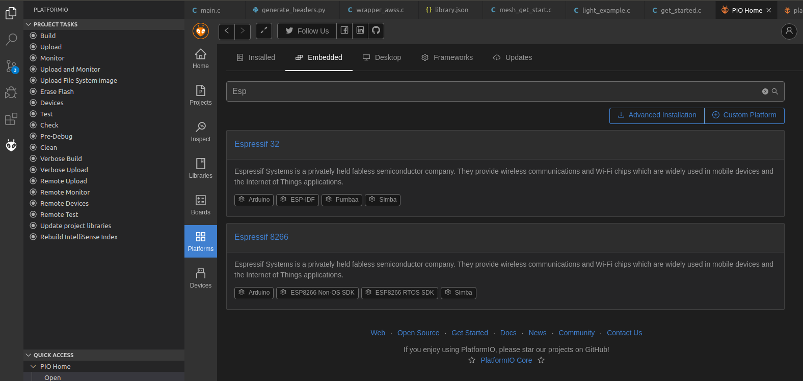
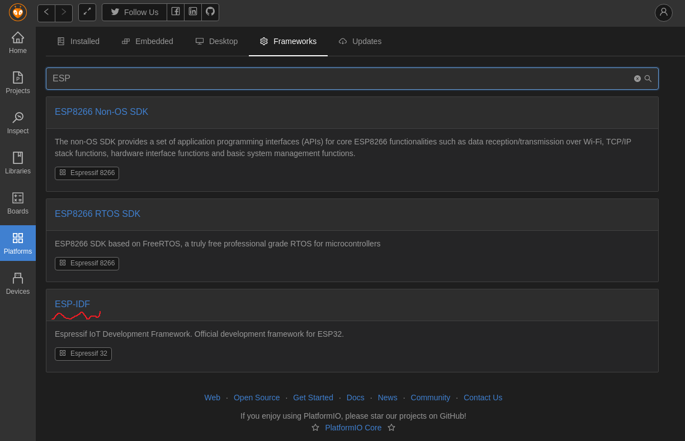
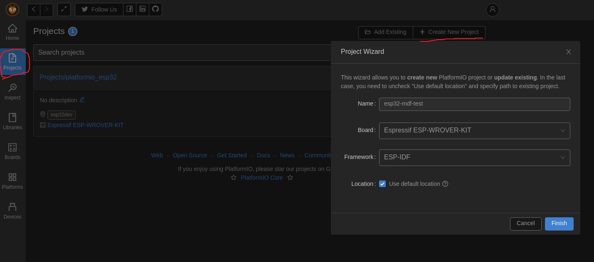
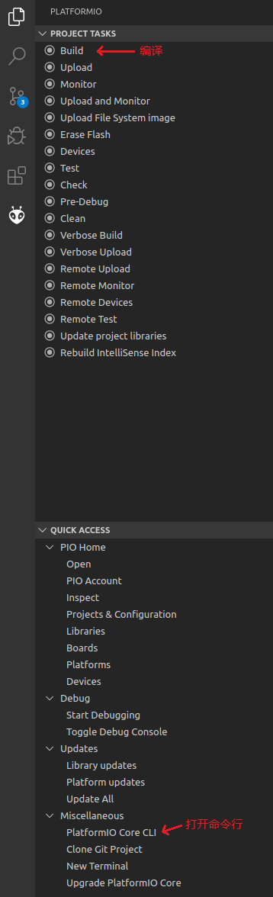

Ubuntu 下使用 VScode 插件 PlatformIO 进行 esp-mdf 开发的折腾记录
PlatformIO介绍
PlatformIO IDE 是下一代物联网集成开发环境。PlatformIO Core (CLI tool) 是整个平台生态系统的核心，由以下部分组成：
- 多平台编译系统
- 开放平台和包管理器
- 库管理器
- 库依赖项查询器
- 串口监视器
- 集成组件(云和桌面 IDE 和持续集成)
PlatformIO Core 是用 Python 编写的，适用于 Windows、macOS、Linux、FreeBSD 和基于 ARM 的信用卡大小的计算机(Raspberry Pi、BeagleBone、CubieBoard、Samsung ARTIK等)。
PlatformIO Core提供了丰富的、文档化的命令行接口(CLI)。其他基于平台的软件和IDE都基于PlatformIO的核心CLI，比如PlatformIO IDE。换句话说，他们用自己的GUI封装了PlatformIO核心。
安装PlatformIO IDE
这里的安装是通过VSCode的插件形式安装，也是官方推荐的安装PlatformIO IDE 的方式。教程：https://docs.platformio.org/en/latest/integration/ide/vscode.html#ide-vscode
安装只需要跟着上面的教程点点鼠标就行了，接下来说明安装完了该如何开发ESP32。
PlatformIO结构
PlatformIO IDE
- Platforms 开发平台，如 Arduino 、Atmel AVR、Espressif 32、ST STM32 等
- Frameworks 开发框架，如 Espressif 32 平台有 Arduino 、esp-idf、 simba等框架
- Boards 开发板，每个平台会有一些不同的开发板，记录着诸如： cpu类型、ram大小、接口等特性
- Library Manager 管理 PlatformIO Registry 和 VCS 仓库的工具
PlatformIO IDE 的工程结构
- include 头文件
- lib 库
- src 源代码
- test 统一测试
- .gitignore 用于管理 Git 忽略某些文件
- .travis.yml
- platformio.ini 项目配置文件
如何开发ESP32
准备工作
PlatformIO 支持很多平台的开发，我们需要开发 ESP32 ，理所当然就应该先安装 ESP32 的 Platform ，这里它被叫做 Espressif 32

然后安装开发框架，上面的标签栏选择到 Frameworks ，搜索 ESP ，这里选择 ESP-IDF 开发框架

新建工程
安装好了就可以新建一个工程了，进入 Projects 页面，点击 Creat New Project 再填好信息，最后点 Finish 就会自动新建一个工程。

新建好的工程路径在 ~/Documents/PlatformIO/Projects/esp32-mdf-test 目录结构：
1 | . |
快乐开发
这时你可以使用图像界面来进行操作，也可以用命令行：

命令行输入 pio -h 就会提示帮助信息，安照提示使用还是很方便的。如果点 PlatformIO Core CLI 没反应可以执行 export PATH=$PATH:/home/yourname/.platformio/penv/bin:/home/yourname/.platformio/penv 来自己手动添加路径（注意把yourname换成你的用户名）。
到这里，你就可以开始基于 espidf 框架开发自己的程序了，但是有几个需要注意：
- PlatformIO 不能用 menuconfig ，暂时的解决办法是直接在 sdkconfig.h 里面修改配置，因为重新编译不会还原 sdkconfig.h 的内容。
- 这里的sdkconfig.h 里面不能用
//注释，只能用/* */，否则编译不过，最好是不要写注释 - 这里的 espidf 版本和乐鑫的 esp-idf 版本命名方式不相同，看起来 PlatformIO 的 espidf 框架是基于乐鑫 esp-idf-v3.3 版本的。
添加esp-mdf
在项目中， esp-mdf 也是被经常用到的，遗憾的是 PlatformIO 暂时没有这样的一个库，只能我们自己去添加，下面将说明如何添加 esp-mdf。
先直接编译看看
在开始添加库之前，我们先吧 esp-mdf 里的 get-started 例程源码放到我们新建的工程目录的 src 下，目录结构变成这样：
1 | . |
然后我们在终端执行 pio run 编译一下，发现报错 src/mesh_get_start.c:15:24: fatal error: mdf_common.h: No such file or directory 。很明显，我们还没有把mdf的相关文件放到工程里，报这样的错是非常正常的。
添加esp-mdf文件
这一步就直接把从 github 弄过来的esp-mdf文件夹放到工程目录的 lib下（注意：clone 下来的文件夹里带了esp-idf ，把这个文件夹删掉省点空间），目录结构：
1 | . |
再次编译发现还是一样的错误，PlatformIO 根本没有理会我们加了那么一大堆东西，看来我们得想办法告诉它去哪找esp-mdf，还是要回头看看 官方文档 关于包管理的说明。
添加package.json
文档告诉我们，我们要添加一个叫 package.json 的文件，包管理器会根据这个文件提取出库源码。于是研究了里面的字段后再不停的修改，最终在 lib/esp-mdf 下新建 package.json 并添加了如下内容：
1 | { |
编译还是报错 esp-mdf/components/mwifi/include/mwifi.h:141:41: error: 'CONFIG_MWIFI_VOTE_PERCENTAGE' undeclared 。
修改sdkconfig.h
上面的错误明显是 sdkconfig.h 里面缺少一些 mdf 里面特有的宏定义，于是在 sdkconfig.h 后面加上从可以编译的 esp-mdf 里面 copy 出来的一段定义：
1 |
|
再编译一次，就可以看到命令行里编译通过的文件飞快流过，远看就像夜空划过的流星，心中不禁暗喜！
esp-mdf/components/mcommon/include/mdf_common.h:90:30: error: 'MDF_VER' undeclared 再次报错，摸索了一番之后发现IDF_VER是在 .platformio/platforms/espressif32/builder/frameworks/espidf.py 653 行处定义的:
1 | env.Prepend( |
那我们就依葫芦画瓢，也在这个文件加一行：
1 | env.Prepend( |
修改CoAPExport.c
再次编译，报错 components/newlib/include/ctype.h:57:54: error: array subscript has type 'char' [-Werror=char-subscripts] 这个是说数组下标是 char 类型，可以是负数，但是作为数组下标是不能为负数的，所以报错。
解决方法：把 esp-mdf/components/third_party/esp-aliyun/iotkit-embedded/coap_cloud/CoAPExport.c 里的tolower(*p)改成tolower((unsigned char)*p)，其他几个报类似错误的地方也这样强制转换一下。
再编译，0 error(s)！
1 | Linking .pio/build/esp-wrover-kit/firmware.elf |
完善
这样有点问题，我们修改了 PlatformIO 内部的东西，这样并不好。我们希望修改全都在工程下，这样工程才是完全独立的。于是再修改了一下 package.json ：
1 | { |
上面告诉 PlatformIO 我们额外添加一个 python 脚本 generate_headers.py ，通过这个脚本来控制编译过程，里面写上：
1 |
|
然后把之前对 .platformio/platforms/espressif32/builder/frameworks/espidf.py 的修改撤销。
最终工程的结构是：
1 | . |
再次编译，和原来一样的 0 error(s) ，这样修改就全部集中在工程目录内。
总结
PlatformIO IDE无论是安装还是使用都是很方便的，最大的特点是全程无需安装其他依赖，而且可以轻松在许多平台上运行。代码的执行效率由于并没有再封装一层而没有被降低，只是编译花的时间相比原装的 esp-idf 编译工具变长了。PlatformIO 也提供了添加自定义库的方法，使得该开发者不会局限于已提供的库，具有一定灵活性。使用下来有一点难受的就是前面提到的不能使用 menuconfig ，项目的配置全部都要手动修改 sdkconfig.h 文件来实现。对于想用 esp-idf 又不想搭建复杂的编译环境的开发者来说，PlatformIO IDE还是很好的选择。